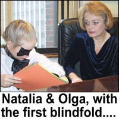
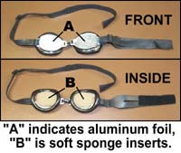
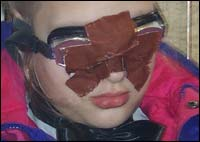
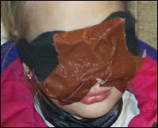
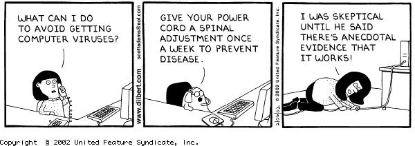

Como les prometí, aquí está la segunda parte de la prueba preliminar de la “psíquica” rusa que fue llevada a cabo el 31 de enero en la ciudad de Nueva York. Esperamos muchos comentarios sobre este artículo y tenemos la esperanza que podrá satisfacer a esas personas que se quejaban de que no reportábamos lo que pasaba con los aplicantes al premio….

Natalia y Olga con la primera venda…
Dejamos la historia de la niña de diez años Natalia Lulova cuando estaba pasando con éxito la primera parte de la prueba preliminar por el premio del millón de dólares de la JREF. Con los ojos, primero vendados por su madre, Natalia no había sido capaz de determinar los colores o las palabras que le fueron presentadas, por un período de 45 minutos estuvo intentándolo sin conseguirlo. Pero tan pronto como cambió a las vendas que ella suele usar —dos esponjas redondas cubiertas por una tela negra a su vez cosidas a un hilo elástico— ella comenzó a leer fácil y rápidamente, hasta las letras pequeñas.
(Debo decirles ahora que yo me había puesto esas mismas vendas más temprano en el día cuando me las mostraron por primera vez. No me sorprendió darme cuenta que hubiera podido jugar tenis usándolas; habían huecos a lo largo de ambos lados de mi nariz. Pero simplemente me limité a decir “muy interesante” y no dije más. Sabía muy bien que Natalia podía ver tan bien como yo si estuviera usando ese aparato. Y como ya veremos, ella podía).
Natalia rápidamente se apoderó de las vendas familiares y, con el mismo movimiento, usando ambas manos, la corrió un poquito a la derecha e, inmediatamente, comenzó a leer, de un libro que estaba abierto sobre la mesa, tan rápido como si no existiera ninguna obstrucción sobre sus ojos. También identificó colores, leyó las palabras que les mostramos y hasta jugó tic tac toc con Mark Komissarov. Observen las fotos que mostramos. Aquí, ella leía texto del extremo superior izquierdo (desde su perspectiva) del libro. La flecha azul muestra el camino de la luz hacia su ojo derecho. En todas las demás fotos que tengo de la sesión —y tengo 32 imágenes digitales más un video— se observa la misma alineación del ojo-con-el-objetivo.
Noten que en la demostración de ta-te-ti, mostrada aquí, Mark está mirando directamente al objetivo y no a Natalia. Esta es su práctica regular, no observarla sino mirar ¡lo mismo que también ella estaba mirando! Convencido de que no hay nada que aprender al tratar de solucionar un truco, él estaba desarmado. En esta foto, una línea amarilla muestra el camino de la luz a su ojo y, la línea azul indica el lugar donde Mark dirige su atención.
Esa demostración de lectura, identificación de colores y ta-te-ti duró por siete minutos y 20 segundos, Natalia siempre sonriendo y riendo, rápidamente emitía resultados con mucha seguridad. Mark Komissarov y Boris Palant también estaban ahora maravillados, muy contentos con el éxito de Natalia.
(Una nota aparte aquí: algunos lectores han sugerido, luego de leer el comentario de la semana pasada, que la niña estaba en desventaja porque yo había insistido en realizar la parte formal de la prueba en inglés. Muy difícil. Le dije —y esto fue discutido mucho antes de que fuera a Nueva York a conducir la prueba— que el inglés sería usado cuando fuera necesario. Con mi consentimiento, ellos hablaron ruso durante todo el procedimiento descrito más arriba porque Mark no se siente muy seguro de su uso del inglés. Pero ya por años, Natalia ha estado yendo a una escuela en Brooklyn y es bastante elocuente en inglés. Sólo con la lectura de una palabra tuvo dificultades - y fue con “thoroughbred” (“pura raza”), una palabra que estoy seguro muchos niños de diez años tienen dificultad para leer. Antes de preparar las tarjetas con objetivos de palabras-solas para ella, pregunté si querían que las escribiera en inglés o en ruso y me dijeron que las redactara en inglés. Le envié al señor Palant, con anterioridad, ejemplos de esas palabras-objetivos, impresas en letras mayúsculas de 1/2” en tamaño y en inglés. Al momento de la prueba en Nueva York, cuando específicamente le pregunté a Natalia si se sentía competente usando el inglés durante la prueba, ella respondió que era “muy buena en inglés”. Y lo era).

arriba: frente, abajo: dentro
A. indica el papel de aluminio
B. indica las esponjas suaves
insertadas
Al comienzo de la segunda parte de la prueba, cuando yo tendría la oportunidad de asegurarme que Natalia no estaba usando la vista como su “segunda visión”, introduje un par de “goggles” de nadar preparados especialmente. Tenían una capa de papel de aluminio en el exterior para opacar la luz y les inserté en el interior unas esponjas de hule suaves y ovaladas. Este tipo de lentes para nadar se sellan alrededor de los ojos, por supuesto, pero cuando se los puse a Natalia me di cuenta que su pequeña cara no permitiría que los lentes sellaran a menos que estuvieran bastante ajustados ya que los aros de vinil estaban diseñados para órbitas oculares de adultos. Cuando apreté el retenedor, ella se quejó de la presión así que lo aflojé lo suficiente para que los aros de vinil no cerraran la visión muy bien por los lados de su nariz. Pero luego de aplicar cinta adhesiva en esas áreas críticas, Natalia no podía ver, ni por su visión secundaria ni por la primaria.
Algo más llamó mi atención. Aunque Natalia no se quejó cuando la cinta estaba siendo aplicada por su nariz, Mark y Palant si objetaron. Dijeron que ella no podía respirar aunque era obvio para todo el mundo que ella podía, fácilmente. Ajusté la cinta un poco y le pregunté a Natalia si podía respirar. Ella dijo que sí y comenzamos la demostración.

Noté en ese momento que cuando Mark ponía una pieza de papel de color en sus manos, Natalia lo agarraba por encima de su cabeza y, pensando que pudo haber desarrollado un huequito en la parte alta de todo aquel arreglo, apliqué un pedazo más de cinta. Pueden ver en esta imagen el conjunto terminado. El señor Palant comentó, “si usted continúa agregando cinta adhesiva, señor Randi, es evidente que ¡ella no podrá ver!” Yo le respondí, “Para eso estoy aquí, señor”.
Natalia no podía ver. Tampoco podía actuar. Le quitamos esa venda y la cinta.
Ahora bien, todos conocemos la historia del Hermano Conejo. Bueno, yo sentía como crecían mis orejas en este momento de la prueba. Estaba seguro de saber cómo Natalia había visto con sus vendas de esponja. Por esa razón, le ofrecí dejarla usar esas vendas, con las que había obtenido tanto éxito previamente. Añadí que iba a poner tapujos adicionales en algunos sitios, la aceptación fue inmediata. Les repetí de nuevo, cuidadosamente, que añadiría algo a la venda y, aún así seguían encantados con mi oferta.

Cuando la conocida venda estaba posicionada, natalia era toda sonrisas - hasta que yo me aproximé y apliqué piezas adicionales de cinta adhesiva para que no pudiera hurtar miradas por los lados de la nariz. Natalia cambió su expresión y estaba evidentemente frustrada. Ella, alternativamente, intentó adivinar los colores de los papeles y leer el libro y las tarjetas con palabras. Movía la cabeza en todas direcciones, murmuraba en ruso. Más tarde, después de 18 minutos y 10 segundos de intentarlo, se dio por vencida.
Había fallado la prueba preliminar para el premio del millón de
dólares de la JREF.
Una nota a modo de cierre, sobre algo a lo que nos referimos
anteriormente. Hemos dicho que las personas adultas que acompañan a
Natalia nos habían informado que ella no podía exhibir sus poderes
si su cabeza era cubierta por una simple capa o si un pedazo de
papel era puesto entre ella y el objetivo, tampoco ningún material
opaco podía ser puesto encima del objetivo. El señor Palant me dijo,
con respecto a estas limitaciones, “no sabemos por qué”. Yo creo
saber porqué. Pero les relataré primero de una demostración que fue
hecha durante la prueba que fue previamente abortada el 11 de
diciembre, 2001 en la JREF en Florida. Esta prueba fue conducida por
Andrew Harter. En una variante de la demostración de Natalia, Mark
Komissarov guardaba un papel de color en su maletín para que ella lo
adivinara. Pero, a pesar de haber dicho que ella no era capaz de
realizar estos trucos, que era imposible, ¡Natalia siempre pudo
adivinar qué color era! Para Andrew era, por supuesto, obvio lo que
estaba pasando, aunque parece que no era nada obvio para Mark o
Boris. Natalia no estaba “viendo” los colores que eran guardados -
ella veía los colores que quedaban encima de la mesa frente a ella
y, simplemente decía el nombre ¡del que no estaba sobre la mesa!
Aquí tenemos de nuevo la pregunta candente: ¿son los adultos aquí,
actores “cómplices” del acto?
Primero, ellos pudieron haber usado una docena de formas de hacer
trampas en la prueba y que lo hubieran ayudado a pasar la prueba
preliminaria sin problemas, pero no lo hicieron. Existen muchos
métodos distintos en los que Natalia pudo haber usado señas,
especialmente en la prueba con elecciones limitadas de
identificación de colores. Por ejemplo, hubiera sido efectivo decir
una palabra rápida en ruso aunque ésto hubiera sido grabado en video
y lo hubiéramos descubierto más tarde. Las vías electrónicas también
son aplicables aquí, y muchas otras.
Segundo, cuando Olga - una mujer muy glamorosa e impresionante - le
vendó primero los ojos a su hija, había sido efectivo. Si Olga
hubiera estado de cómplice en el acto no hubiera sido tan minuciosa.
Ella no está haciendo trampa, se la están haciendo a ella. Y habían
expresiones faciales de Olga que me indicaban que tenía dudas serias
acerca de la naturaleza de las demostraciones que su hija (¡y la
hermana de Natalia de siete años también!) efectúa.
Mark Komissarov, creo, también es otra víctima inocente. Yo le había
escrito a Palant, antes de conocer a todos los protagonistas
principales de este drama, diciéndole que estaba seguro que Mark era
el “Svengali” detrás del asunto. Era de la opinión que él se había
“entretenido mucho” enseñándole a Natalia cómo hacer este acto, algo
que he observado a muchos otros “instructores” hacer en el pasado.
Simplemente no podía creer que él, un hombre bien educado, ingeniero
químico, realmente pudiera ser engañado con este simple ardid. Yo
estaba equivocado - y ¡debí haber recordado a Henriette!
Más pruebas sobre la inocencia de Mark salieron a la luz cuando un
amigo mío, productor de una red de televisión importante, se
encontró por casualidad con alguien conectado a los Lulovas, y fue
invitado a ver una demostración de las dos hermanas antes que yo
aplicara la prueba. El modus operandi usado por Natalia fue,
inmediatamente, transparente para él y, más como una broma para todo
el mundo, mi amigo se ofreció para hacer la prueba del color en el
maletín-cerrado, de la cual Mark estaba tan orgulloso. Él,
sencillamente, se paró de espaldas al lugar donde se efectuaba el
procedimiento y dijo cada color corréctamente luego de que había
sido encerrado en el maletín, lejos de la vista de todos. Pero él
utilizó un método diferente. Notó un espejo en la habitación, y se
volteó hacia el espejo y, claramente vió, por la reflección, cada
pieza de papel coloreado cuando era introducida al maletín…Mark
cayó como un tonto con este truco.
Boris Palant es también un hombre bien educado e inteligente, pero
cuando Andrew Harter le apuntó que Natalia estaba doblando su cabeza
de forma tal que un pequeño hueco podía ser usado para mirar (y esto
es deslumbrantemente obvio en el video de la grabación de la prueba
realizada el 11 de diciembre que el equipo de televisión francesa
nos envió), Palant le dijo a Andrew:
Ella siempre hace así (doblando la cabeza lejos del
objetivo)…pero ¿y si ella ve con su oído?
No, no crean que esta es una idea absurda del señor Palant. Sospecho
que fue sugerida por el señor Komissarov ya que es el tipo de
posibilidad que un parasicólogo, con entusiasmo, sugeriría. El señor
Palant, tratando de asegurarle a Andrew que Natalia no los estaba
engañando, justo después que la niña se diera por vencida con la
prueba de la Florida y buscara refugio en su madre Olga, dijo:
Por eso es que está tan molesta, porque ella no usa trucos para
nada, y ¡no hay trucos aquí!
En otro momento del procedimiento, luego que Natalia fallara en su
actuación y terminara este otro intento, Palant me decía:
Es una niña muy honesta. Cuando no puede hacerlo ¡ella lo admite!
Esto fue luego de 45 minutos de retuerzos, estiramientos y
adivinanzas, entonces ¿Palant decide que es la honestidad básica de
Natalia lo que ha sido demostrado?
Mientras aplicaba cinta adhesiva a la cara de Natalia, para bloquear
los huecos en la venda, el señor Palant objetó y le dije: “estoy
haciendo alteraciones en [la venda] para que ella no pueda usar la
visión”. Él había dicho en ese momento, “nuestro reclamo es que ella
no usa los ojos”. Seguro que estaba claro que me estaba cerciorando
de que ella no pudiera, pero Palant se quejó:
Bueno, si sigue poniendo más cinta adhesiva, tarde o temprano
¡lo logrará!
Si. ¡Ésa era exactamente la idea, señor Palant!
Natalia, como muchos otros niños en la historia, ha creado un
monstruo que ella no puede ignorar. Alentada por los adultos, en una
posición donde se espera que produzca resultados,y ahora encarada
con la posibilidad - y la obligación - de llevar a casa un millón de
dólares si puede hacer lo que ellos creen que ella puede hacer, ella
no puede volverse atrás. Está atrapada por su propio acto - el que
estoy seguro le pareció al principio nada más que una simple broma.
Pero ella no se había dado cuenta de la poderosa necesidad que los
adultos tendrían en que ella tuviera éxito en una tarea que ahora
sabe no es posible realizar cuando es confrontada con observadores
experimentados. Tampoco pudo haberse dado cuenta de lo que desde
ahora llamaré el Síndrome de Henriette - la poderosa necesidad que
tienen algunas personas de aceptar y creer algo absurdo y la
habilidad de ignorar y descartar toda evidencia que diga lo
contrario, no importa la cantidad ni cuán fuerte sea. Los adultos
envueltos en el caso Lulova exhibieron todos esta conducta en su totalidad.
Natalia fue llevada a este dilema, tontamente. Ambos Andrew y yo
lamentamos esta situación, y ambos deseamos que nunca hubiera
ocurrido. Pero así fue y lo manejamos tan gentil y tan correctamente
como pudimos.
El crítico del periódico el Chicago Sun-Times, Phil Rosenthal,
ofreció a sus lectores este avance de dos de los más recientes
“shows” de Edward que fueron presentados hace un par de semanas:
“Cruzando al otro lado con John Edward”: Vamos a hablar de la
muerte, baby. Edward ayuda a Pepa de Salt-N-Pepa a comunicarse
con un familiar fallecido, lo que no es ni cercanamente tan
asombroso como el hecho de que ella se lo cree.
Y….
Edward da la ilusión de estar hablando con la madre muerta de
Roma Downey, la hija fallecida de Anne Rice y la abuela de Ricky
Lake, y todos le creen. ¿Nos quieres impresionar, amigo?
Entonces pon a Lake en contacto con los restos de su ya muerta dignidad.

—¿Qué puedo hacer para evitar contraer un virus en la computadora?
—Dale al cordón del enchufe un ajuste espinal una vez a la semana para prevenir enfermedades.
—¡Era escéptica hasta que dijo que existe evidencia anecdótica de que funciona!
Mi agradecimiento a Scott Adams, creador y director del desgraciado Dilbert, por concedernos permiso para usar esta observación. Refleja el triste hecho de que demasiado de nosotros dependemos de lo que escuchamos y aceptamos anécdotas concernientes a lo que es y no es verdad en el Mundo Real. Me quedé sorprendido recientemente al escuchar a mi doctor anunciarme en su oficina que ahora practicaba medicina “basada en evidencia” - cuando yo tenía razones para creer que él siempre había practicado ese tipo de medicina. Necesitamos tener opiniones “basadas en evidencias”, amigos, o nos vamos a encontrar en una gran pila de problemas…
Me hace feliz ver que esta idea ha sido verificada aquí, una vez más, y que presenta una noción absurda al público pero que, presentada con sentido cómico, ayuda a extraer la naturaleza verdadera de la idea. Los dibujantes de tiras cómicas, los sátiros, los comediantes y otros artistas, nos proveen con lecciones valiosas a través de estos medios. Piensen en Mark Twain.
El foro de la JREF está completamente lleno de temas importantes y
provocativos. Sencillamente, no puedo deslizarme entre todos esos
“hilos” que se encuentran allí pero la fiel Linda siempre me envía
un artículo ocasional que necesita de mi atención. Por lo que
intento responderlo.
Uno de los miembros del foro, Karl Paananen de Lansing, Michigan,
hizo un importante comentario acerca de mi objeción reciente a que
le dieran a una astróloga su parte de un premio compartido por
proveer con información que llevó a la condena de un criminal. Karl dice:
¿Es que he malentendido algo?
Leí el artículo en el Santa Rosa Press Democrat sobre la
astróloga que ayudó a condenar a Rodney Blach y, que por lo
tanto, puede que la elijan para compartir parte de la
recompensa. No entiendo porqué Randi se siente incómodo con
ésto. Según entendí al leer el artículo, se encontraron gráficos
astrológicos que mostraban que Rodney Blach creía en la
astrología y que podría haber estado usando astrología para
planear sus crímenes.
Ahora bien, yo no creo en astrología, ni tampoco Randi, y la
astrología no funciona. Sin embargo, hay personas que aún creen
y, evidentemente, Rodney Blach es uno de ellos. Al intentar
atrapar y condenar a cualquier criminar ¿no es importante
estudiar y tratar de entender las creencias y los procesos del
pensamiento del criminal, aún si el criminal tiene creencias que
son incorrectas? Y, ¿no sería la forma más correcta para
proceder en estos casos que consultar la opinión de alguien que
conozca bastante sobre estas creencias?
Si fueras el fiscal que intenta condenar a un criminal quien
dice pertenecer a un extraño grupo religioso, te gustaría
consultar con alguien que pudiera explicarte cuáles son las
creencias del grupo, para que de esta forma puedas lograr, de
manera más fácil, una condena. Y parece que ésto fue lo que
Vicki Hill hizo en este caso.
O ¿estoy completamente entendiendo mal lo que pasó?
Lo que pasó, Karl, fue que yo me apresuré sin prestar la
consideración apropiada. Me equivoqué al no pensar en estos hechos
cuidadosamente. Estás en lo correcto. Con tus disculpas, todavía no
creo que un astrólogo debió haber recibido parte del fondo de la
recompensa sino que debió haber recibido sólamente, el monto que se
le otorgan a los “testigos expertos” o a los “consultores”. Y
apuesto, que si otra astróloga hubiera sido consultada, él/ella
hasta podrían haber llegado a interpretaciones bien contrarias a las
fuerzas cósmicas que asistieron en el momento. Por supuesto, mi
consternación surgió por el hecho de que ahora los astrólogos por
todo el mundo se jactarán sobre esta “aceptación de los tribunales”,
pero fui muy precipitado en mis comentarios. Mea culpa. No demasiada
culpa pero….
Sobre este mismo artículo también me ha escrito un astrólogo preocupado:
Le debe a la señora Hill [la astróloga que fue recompensada], a
sus lectores y a la verdad, la publicación de algunos de los
comentarios positivos hechos a favor de su integridad, y la
señora Hill demanda una disculpa, y una retracción, por
insultarla al llamarla “wacko”.
Eso fue “Whacko” [informal, estrafalaria], no “wacko” y no hice
público el comentario que usó ese término. Mi castigador me ha
llamado para que publique aquí “algunos de los comentarios que han
sido hechos a favor de la astróloga. Iré más lejos. Aquí están todos
los comentarios hechos a favor:
Haley Stokes de Upland, California, también del foro de JREF,
preguntó sobre un reportaje reciente en la prensa sobre la eficacia
de la oración en el grado de recuperación en pacientes con coronarias:
Total de correspondencia en favor de recompensar a la astróloga…
¿POR QUÉ NILOSFRAUDESNILAINCOMPETENCIASONVISTASCOMOPOSIBILIDADESREALESENLOSPROCEDIMIENTOS CIENTÍFICOS?
Necesito saber porque quiero leer su [el científico que lo ha
publicado] análisis sobre las pruebas de oraciones. Tengo un
profesor loco quien insiste que ésta sí es una prueba científica
sobre los resultados positivos de la oración. Ya he encontrado
un artículo en la SDMB [el foro de mensajes de Skepdic.com]
básicamente refutando ésto pero este artículo es todo lo que
pude encontrar aquí. Al final, termina con esta necia bromita:
Me alegra notar que la Universidad de Harvard está, en el
presente, conduciendo una prueba sobre el “poder de la
oración” con 1,800 pacientes admitidos para cirugías del
corazón. Los resultados, según Schafer, se esperan para
finales de este año. Me gustaría mucho ver estos resultados,
especialmente si los controles sobre salidas de información
pueden ser apretados.
¿Ha visto Randi estos resultados? ¿Habló con ellos? He intentado
buscarlo pero no soy muy buena con los buscadores…
El milagro y la maravilla de la oración: evidencias científicas que rezar ¡de verdad funciona!
Bueno, puedo dificultad con un buscador, Haley; he sido similarmente afligido. Pero, amigos, no hay mucho que ganar si yo hago un análisis de cosas como la eficacia de las pruebas sobre la oración. Primero, estas investigaciones son realizadas, por lo general, por creyentes devotos quienes, contrario a la apropiada actitud científica, están intentando probar algo de lo que ya están convencidos. Si las pruebas no parecen ir por el lugar que ellos esperan, tienden a abortar (perdonen la impertinencia) y a comenzar de nuevo. De esta forma, están seguros de arribar, eventualmente, a un resultado “positivo”….
Segundo, cada año se realizan docenas - si no cientos - de estas pruebas por todo el mundo. Cuando las pruebas fallan, ellos desaparecen de la vista de las personas interesadas, si es que alguna vez fueron visibles. Ningún diario - científico o de otro tipo - está interesado en publicar estos resultados, los que, de todas formas, muy pocas veces son enviados para su publicación. Y los “investigadores” silenciosamente se mudan hacia otros proyectos, a menudo a otros intentos para hacer que las pruebas “funcionen”.
Pero —tercero— si algún conjunto de pruebas ofreciera resultados estadísticamente interesantes y positivos, esa información se pondría en amplia circulación de forma inmediata, además de que sería enviada a cada diario y a todos los espacios de prensa y siempre sería capturada para su entusiasta publicación con una gran celebración. Piénsenlo. Un editor recibe dos titulares:
“Estudio descubre que no hay poder en la oración”
y
“El poder de la oración es comprobado por un científico”.
¿Cuál creen ustedes que se convertirá en un artículo….?
“Adolfo Hitler está vivo y bien y ahora vive en Argentina” y “Adolfo Hitler murió en el búnker de Berlín” son otros dos ejemplos similares. Uno es una gran historia, el otro es lo que los editores llaman abiertamente, una “no-historia”. Así es la vida.
Finalmente, algunos de estos anuncios “positivos” sobre el éxito de la aplicación de la oración en situaciones médicas mencionados anteriormente, han sido examinados, se han encontrado diversas fallas y han sido sencillamente olvidados, luego de ser castigados lo suficiente por científicos responsables. Pero nadie, al final, presencia la historia, en general, completa - porque simplemente no está disponible.
Los proyectos que avisan sus metas con anticipación (que es lo que siempre hago con los míos) captan mi atención, pero no voy a poner a rodar mis ruedas haciendo investigaciones profundas sobre artículos que sólamente tiene valor para la prensa en el presente. Prefiero dejarlo que se marchite naturalmente.
Incidentalmente, por favor noten que el científico citado arriba sólo observa que los “controles sobre la salida de información [deberían] ser apretados”. Pero ésa no es la única fuente de fraude o error. Problemas como los malos reportes, los abortos voluntarios, la selección de datos, la alteración de datos y los cambios en los métodos de análisis estadísticos, pueden a menudo ser encontrados aquí también. La ciencia no es fácilmente aplicada y llevada a cabo en lugares donde necesidades emocionales y/o filosóficas están presentes. En parasicología hemos encontrado que ésto puede ser un grave problema.
Yo agregaría que la ciencia común, en todos los campos, también está
sujeta a estas debilidades. Regularmente escuchamos que el fraude y
la incompetencia han sido descubiertos en investigaciones - para el
crédito y el progreso de la ciencia misma.
Un lector nos ofrece este comentario que se refiere al artículo de
la semana pasada sobre las declaraciones del Vaticano de que las
enfermedades se deben a comportamientos pecaminosos:
Sólo me preguntaba que si han notado lo mismo que yo: el Papa
¡no es un hombre saludable! ¿Significa éso algo?
Okay. No puedo mantener este próximo artículo sólo para mí por más
tiempo. Si quieren disfrutar de una verdadera “carcajada”,
asegúrense de estar sentados y de tener mucho tiempo guardado para
deberes divertidos. Uno de los sitios webs más ridículo, juvenil,
necio y absurdo que jamás me hayan sugerido (esta vez por Mogens
Winther) se encuentra en
metatech.org/planet_x_nibiru_earth_changes.html
. Échenle un vistazo. Verán la pregunta titular:
¿Pasará por aquí el Planeta X (Nibiru) en la primavera del 2003?
Como todo el mundo, me he estado preguntando por dónde anda Nibiru
en estos días. Bueno, según alguien llamado Mark Hazlewood su
“investigación” indica que Nibiru (también llamado Planeta X o el
décimo planeta) estará embistiéndonos muy pronto, causando cambios
masivos en la Tierra. Los científicos rusos, nos asegura Hazlewood,
predijeron “una cuerda de calamidades” y “una disminución masiva de
la población” en esta visita y, se preguntan, si Rusia aún existirá
como un país ¡después de este evento! El artículo nos asegura que:
TODASLAS DEMÁS NOTICASPALIDECENEN COMPARACIÓN CONESTEINMINENTEEVENTODEPROPORCIONES BÍBLICAS ENELVASTOMEGAMUNDO.
Personas bien informadas dentro de la NASA especulan que dos
tercios de la población del planeta perecerá durante el
inminente cambio polar causado por el paso del Planeta X en el
2003. Los otros dos tercios de aquellos que sobrevivan
inicialmente, serán expuestos cruelmente al hambre y a los
elementos, por espacio de seis meses. Cada agencia gubernamental
secreta en Estados Unidos está al tanto de lo que se espera en
el 2003 y se están preparando. El Vaticano también está
completamente enterado de lo que se espera. El público no ha
sido advertido ni se le ha dado la oportunidad de prepararse.
Diferentes versiones del planeta “Nibiru”…
Pero léanlo ustedes mismos, luego de que se familiaricen con algunas de las diferentes versiones sobre la apariencia de este renegado planeta, comiencen entonces a ordenar los suministros y a vertir el hormigón para el refugio subterráneo. Luego, para aprender aún más sobre esta reprimida información vaya a www.relfe.com (¡un sitio altamente recomendado por los amigos de Nibiru!) Y lean “La historia nunca contada que explica por qué no eres un multimillonario”, entre otros brillantes artículos como:
¡¡¡La música de rock pesado crea ratones asesinos (&
estúpidos)!!! Nueva evidencia científica sugiere que la
exposición a cierta música puede causar enojo y violencia (y
bajo coeficiente intelectual).
¡Mensajes milagrosos del agua! ¡Asombrosas e importantes
fotografías! Tu sabes lo que ponen en el agua ¿no? ¡Flúor! ¡Con
el pretexto de que endurece los dientes! Eso es ridículo. ¿Sabes
lo que esta sustancia te hace? Pues, en realidad debilita tu
voluntad y se lleva tu capacidad para el pensamiento libre y
creativo. Y te hace un esclavo del estado (Verdadero) - Mel
Gibson en “Conspiracy Theory”.
¡Descubren nuevos códigos bíblicos! Aprende sobre la nueva
escala musical que puede elevar las frecuencias de las personas.
Esta escala fue recientemente descubierta escondida en la Biblia
por el doctor Puleo.
Después de todo eso, necesitarán regresar a la Tierra (el Mundo
Real) para re-estimular y premiar tu cerebro con un sitio cuya
promoción aquí, hasta el momento, había desantendido, por ésto pido
disculpas. Por este medio trataré de remediar ese déficit.
Bob Carroll es un profesor de 56 años que trabaja para la
Universidad de la Ciudad de Sacramento, pero, mucho más importante,
es que él es el espíritu que se mueve detrás de esta página web
Skepdic.com - la cual deben consultar. Ha
sido titulada, “El diccionario del escéptico”. Un reciente y
excelente artículo publicado en el Sacramento Bee, lista una serie
de los objetivos de Bob: amway, acupuntura, creacionismo, OVNIs,
PES, PNL y Feng Shui, entre muchas otras. Para Bob, Amway es,
simplemente, una “treta legal sobre pirámides” y, correctamente,
define el término “ciencia de la creación” como un oxímoron. Hombres
lobos, zombis, Nessie y Pie Grande han sido todos desmembrados y se
les han realizado autopsias en Skepdic.com. Hay 23,044 enlaces en la
página, incluyendo 13,093 enlaces que llevan al visitante a otra
área de Skepdic.com.
La verdad es que me gusta (léase, admiro y envidio) el estilo de
Bob. “No hay nada aburrido en una vida sin hadas, conejos de
pascuas, diablos, fantasmas, cristales mágicos,etc.,” él escribe,
“la vida es sólo aburrida para la gente aburrida”. Y bajo el título
WWJD (what would Jesus do?) ¿Qué haría Jesús?, él tiene una
respuesta para esa angustiante pregunta:
Jesús no le preguntaría a nadie lo que tiene que hacer. Más bien
él se lo diría. Les ordenaría. Y si ellos desobedecen, los
amenazaría con la maldición eterna.
Bob define el Feng Shui como
…otra estrategia de “energía” de la Nueva Era con un conjunto
de productos metafísicos desde recortes de papeles de
media-lunas y planetas hasta llegar a espejos octagonales y
flautas de madera, que son ofrecidas en venta para ayudar a
mejorar su salud, maximizar su potencial y garantizar el
cumplimiento de alguna filosofía tipo galletita de la fortuna.
Me inspiré y decidí enviarles este artículo debido a las muy
bienvenidas noticias publicadas en The Sacramento Bee de que hay
planes de publicar el material que aparece en Skepdic.com ¡en un
libro! Pero, como dice el Bee, Bob Carroll sabe perfectamente bien
que nadie se hace rico escribiendo de este tipo de material. Los
escépticos sabemos que se consigue mucho más dinero engañando a la
gente, consiguiendo que suspendan el sentido común, que lo que se
puede conseguir tratando de aclararles las cosas.
Amén.
El lector Brad Tittle nos relata esta aventura…
Casi secuestrado por alienígenas
Alguien intentó secuestrarme anoche. Estaba tratando de
descubrir un anillo de Multi-Niveles de Mercaderes quienes
usaban aparatos para controlar el pensamiento para mantener sus
líneas seguras. Me fui a casa y me acosté a dormir.
Mientras flotaba allí, entre la tierra de los sueños y estar
despierto, los escuché llegar a mi puerta. Estaban allí con su
collar controlador listos para hacerme adaptar a sus
manipulaciones malignas. Luché por salirme de la cama. Mi cuerpo
no respondía. No podía moverme. Traté de hablarle a mi esposa
pero ninguna palabra salía de mi boca. Intenté gritar. Sólo un
débil murmullo se escurrió por mi garganta. Traté de gritar más
fuerte y conseguí un pequeño gemido. Si no los asustaba ellos me
atraparían. Traté de gritar con todas mis fuerzas; entonces un
pequeño quejido salió de mis labios y me desperté. Confundido,
me di cuenta que había estado soñando. Una vez más había
experimentado la parálisis del sueño.
Si estoy profundamente dormido y soñando, puedo hacer casi
cualquier cosa. Controlo lo que me rodea. El agua dejará de
fluir si me concentro en ello. Cuando salto sobre charcos,
arroyos y zanjas, sólo pienso en ir un poco más lejos. Tan
lejos, por cierto, que llego a sentirme como un comercial para
Windows XP. Todo esto funciona muy bien hasta que sueño que
estoy despierto, tratando de dormir. Este sueño no me deja
disfrutar del descanso que ofrece dormir.
Cuando en los sueños te encuentras mirando la pantalla
intermitente de tu despertador digital o sueñas que estás dando
vueltas en la cama, no te sientes como que has dormido. Prefiero
soñar con dinosaurios persiguiéndome (á la Jurassic Park) o
enfrentando a mis compañeros de clases completamente desnudo.
Cualquier cosa que distinga el sueño de la realidad hace más
fácil que lo recordemos y lo descartemos.
He tenido muchos episodios de parálisis de sueño. Por lo
general no tienen nada que ver con malvados anillos de
Multi-Niveles de Mercaderes, sólo gente anónima que se mete en
mi casa. No sabía lo que me pasaba hasta que leí el libro de
Sagan A Demon Haunted World. Después de leer la sección sobre
secuestros por alienígenas (y su probable conexión con la
parálisis de sueño, me di cuenta de que había experimentado algo
similar. Ahora,cuando me ocurre un episodio, me doy cuenta de lo
que está pasando. Por lo menos lo hago luego del tercer o el
cuarto intento de tratar de aterrorizar, sin conseguirlo, a mis
atacantes con mi voz. Me despierto y con gran alivio me aseguro
de que no hay nadie en la casa.
Si hubiera visitado a un hipnoterapista especializado en
secuestros por alienígenas en vez de las palabras racionales de
Carl Sagan ¿no sería parte ahora de la multitud secuestrada por
alienígenas? Espero que no, pero ya he demostrado credulidad
extrema más de una vez en mi pasado y, escuchar a un
“profesional” confiadamente está dentro de mis habilidades.
Felizmente, descubrí bases más sólidas en Shermer, Sagan y Simanek.
¿Recuerdan el escandaloso reportaje que discutía aquí sobre los
409,000 dólares gastados por el Departamento de Energía en pruebas
para otra varita de radiestesia, el Aparato de Localización de
Anomalías en la Resonancia Magnética Pasiva? Mencionaba que Charles
Downs, el fundador de la compañía, dijo que la razón por la cual las
pruebas realizadas por el gobierno habían fallado, era que tenían
“calibraciones inadecuadas y la carencia de pruebas contaminantes
puras”. Pero, dijo, él tuvo mucho éxito encontrando petróleo y gas.
Nuestra lectora Jaime Arbona comenta:
Bueno, si necesitas que los contaminantes sean “puros” para que
puedan ser detectados entonces sólo podrás detectar petróleo y
gas “puros” y algo así no existe. De hecho, no hay nada “puro”
en este mundo.
Si, éso tiene sentido. ¿Son todos los contaminantes encontrados por
el Aparato de Localización de Anomalías en la Resonancia Magnética
Pasiva contaminantes “puros”? Webster nos dice que “contaminar”
significa “hacerlo impuro”. La mente se tambalea…
Puede ser que este maravilloso invento necesita muestras
“comparativas” para que “afine” su sensibilidad hacia lo que se está
buscando. Practicantes de la radiestesia que usan péndulos a menudo
tienen unas pequeñas cavidades en donde los materiales “objetivos”
(oro, petróleo, agua, etc.) son introducidos para “sensibilizar” al
péndulo. Hasta aquellos que utilizan un palo en forma de tenedor
algunas veces amarran, una muestra del material buscado, al final de
sus varitas. Recuerdo que durante laspruebas de radiestesia en
Australia hace unos años, uno de los participantes puso un pedacito
de oro en la punta de su palo en forma de tenedor, comenzó a
moverlo cuando, para su consternación, perdió la pieza cuando el
palo dio una vuelta en el aire y la muestra salió volando por los
aires. Por supuesto, como todos vieron más o menos por donde había
aterrizado, todos los practicantes se movieron hacia el lugar con
sus palos, varas, alambres y péndulos alertas y vibrando, para que
los ayudaran a encontrar el pedazo de oro.
Todavía sigue ahí, en algún lugar cerca de Sidney, en un campo…
Nuestro amigo Brian Siano comenta acerca de la no-broma sobre la
“Espontánea e involuntaria invisibilidad humana” que vieron aquí:
Una de las cosas buenas de los estafadores es que - cuando ya
piensas que no pueden ser más estúpidos, uno de ellos sale con
algo que te deja completamente boquiabierto. Pero existe un
precedente para esta “involuntaria invisibilidad”. Hay un cuento
corto de Harlan Ellison llamado “Estas escuchando”, en donde un
hombre viviendo una vida muy monótona, más o menos, desaparece y
se encuentra en un lugar donde no puede ser visto ni escuchado
por las personas a su alrededor.
Brian también nos trae el guión del bosquejo en Monty Python,
sugerido por John Oswalt como la fuente que dio nacimiento a esta
extraña noción:
El siguiente es del bosquejo “gente interesante” de Monty Python:
Compere: Bueno, no podrías ser más interesante de ahí ¿o
si?. Conmigo se encuentra ahora el señor Thomas Walters de
West Hartlepool quien es totalmente invisible. Buenas
noches, señor Walters. (Se voltea hacia la silla vacía).
Walters (Eric Idle): (fuera de cámara) Aquí, Hughie.
(Compere se voltea y encuentra a un hombre vestido de forma
extremadamente aburrida sentado a su lado).
Compere: Señor Walters, ¿está seguro que usted es invisible?
Walters: Oh si, ciertamente.
Compere: Bueno, señor Walters, ¿cómo se siente ser invisible?
Walters: (lenta y aburridamente) Bueno, para comenzar, en la
oficina donde trabajo puedo estar sentado en mi escritorio
todo el día y los demás me ignoran completamente. En la
casa, aún estemos en la misma habitación, mi esposa no me
habla por horas, la gente me pasa por al lado en la calle
sin mirar en mi dirección, y puedo entrar a una habitación…
Compere: Bueno, mientras tanto, tenemos gente interesante,
conocimos al señor Oliver Cavendish quien…
Walters: (de forma monótona) Aún ahora, usted mismo, casi no
me presta atención…
Mi buen amigo Sid Rodrigues de Gran Bretaña me envía, para nuestra
consideración, esta interesante pieza que le fue enviada a él, sin
autor. Va seguida de su corrección del reclamo…
Las 8:02 p.m. del 20 de febrero de este año será un momento histórico en el tiempo. No estará marcado por el sonido de los relojes o de las campanas, pero en ese preciso momento, en esa fecha específica, algo pasará que no ha ocurrido por 1,001 años y nunca pasará de nuevo.
Cuando el reloj pase las 8:01 p.m. el miércoles 20 de febrero, el tiempo podrá ser leído, por sesenta segundos, con perfecta simetría 2002, 2002, 2002 o, para ser más precisos, 20:02, 20/02, 2002. La última ocasión que la hora se leyó con un patrón simétrico similar fue mucho antes de los días del reloj digital y de los relojes de 24 horas, fue a las 10:01 a.m. del 10 de enero del 1001 y, como el reloj sólo llega hasta 23:59, es algo que no pasará otra vez.
Sid describió esta última declaración de una forma muy colorida y agregó:
Pasará de nuevo a las 21:12, 21/12, 2112
Así que ahí está. Incidentalmente, los británicos expresan la fecha
febrero 14, 2002, por ejemplo, como 14/02/2002 - o el catorceavo día
del segundo mes del año dos mil dos. Ésa es la forma correcta en mi
opinión. Patos en fila ¿no lo sabían?
Uri Geller (¿Lo recuerdan?) Notó esta asombrosa configuración 20:02,
20/02, 2002, les aseguró a sus devotos fanáticos que tal evento
estaría física y cósmicamente repleto de significado y también
aseguró que si ese día todos se unían con él, desde las 11:11, en
desear aquello que más querían, lo obtendrían. Bueno, por el
espíritu de la investigación científica, lo intenté.
Sophia no apareció.
El lector Bob Kegel, de Aberdeen, Washington, encontró más
significado aún aquí. Él escribe:
Encuentro que la fecha es sospechosa porque soy dueño de un BMW 2002. Junto a otros miembros del culto, marco la hora mágica tocando la bocina de mi “02”, enciendo las luces y realizo otros rituales que no deben ser revelados a los no-creyentes.
Recibí un número de preguntas respecto a mis comentarios recientes sobre el personaje de “La sombra” muy popular en las revistas detectivescas y en Shadow Detective Magazine, cuando yo era niño. Dije que sabía dónde el autor —Walter Brown Gibson— obtuvo su nombre ficticio y el nombre de Lamont Cranston. El nombre ficticio de Walter —Maxwell Grant— vino de dos de sus amigos quienes eran magos. Éstos eran Maxwell Holden y “Gen” Grant, un sobrino del general Ulysses S. Grant. El nombre del personaje secreto de La sombra era Lamont Cranston, que vino del mayordomo en la mansión Cranston, una residencia donde Walter y Litzka Raymond, su esposa, vivieron en la ciudad de Nueva York. Estaba en la calle 52, me parece, a unas cuantas cuadras de mi apartamento en la 9th avenue. El primer nombre del mayordomo era Lamont. ¿Okay?
Los secretos de Miss Cleo
En un excelente artículo, “La señorita Cleo desenmascarada”, Richard Daverman de la Revolución Diaria (dailyrevolution.com/allgood/010608.html) revela cómo aplicó para un trabajo como “consejero telefónico”, a través de un anuncio que no hacía referencia a nada psíquico. En realidad, es un anuncio diseñado para atraer personas para trabajar con Miss Cleo, manteniendo a las víctimas en el teléfono a 4.99 dólares el minuto.
Esto es lo que dice Daverman de su encuentro con la persona que lo entrevistó:
No hubo discusión alguna sobre si yo estaba capacitado o no para el trabajo. No tenía que calificar ni probar mis habilidades en ninguna forma. Ella nunca me preguntó si yo tenía habilidades psíquicas o ni siquiera si yo creía en las habilidades psíquicas para predecir el futuro.
Aún así escuchamos los adjetivos “cualificado” y “certificado” refiriéndose a las personas que atienden el teléfono en nombre de Miss Cleo. Con referencia al significado de las cartas del Tarot que estos “consejeros” deben usar como accesorios, Daverman dice:
Esos significados son genéricos, para nada específicos y, por lo general, esperanzadores. Por ejemplo, la carta número 3 es “La emperatriz” y lleva la siguiente explicación: “Una mujer joven y fértil. Puede también representar regalos materiales. Quizás una madre teniendo un hijo o fertilidad en la situación financiera. Regalos y dinero en el progreso. Una carta muy buena para el dinero o para una influencia femenina”. Mucho terreno ha sido cubierto aquí, un sinnúmero de posibilidades.
Daverman descubrió que los temas que más parecen importarle a las personas estaban bien representados pero le dijeron que actuara de forma alentadora, que pintara una imagen esperanzadora y, - por supuesto - que mantuviera a la víctima en línea tanto como le fuera posible. Los tres minutos iniciales “gratis” son cancelados por trucos que devuelven el peso de la balanza para el lado de Miss Cleo.
Dinero y sexo son dos temas bastante consistentes a través de las interpretaciones de una lectura de cartas, con un sub-tema de adicción (drogas, alcohol, sexo, tabaco) que facilita una área de discusión negativa. Pero la mayoría de las cartas - 80 por ciento - son optimistas; dinero y felicidad son los tiros más comúnes…Para contrarrestar los tres minutos gratis, me dijeron que le preguntara a cada persona que llamara su nombre, su dirección y una dirección de correo electrónico para que “podamos enviarte por correo un juego de cartas del tarot personalizado”. Asumo que alguna publicidad irá junto a ese regalo. También me pidieron que diera el número de la compañía de 1-900, junto con mi identificación personal de cinco dígitos para que el cliente pueda llamarme de vuelta “en caso de que nos desconectemos”. Todo eso, por supuesto, toma casi todo el tiempo gratis.
¿Cuál es la evaluación final del reportero sobre lo que estaba
haciendo? Él concluyó que “no les estaba dando nada a cambio de
grandes sumas de dinero”.
Luego de obtener suficiente material para su historia, renunció.
Y, por esta semana, lo mismo hago yo….
Nota de la traductora: Esta semana, dos amigos de Randi que habían enviado un artículo técnico sobre la teoría de la complejidad, respondieron a ciertas críticas sobre el tema y sus escritos. Sus respuestas no las he traducido esta semana porque no tenemos el ensayo en español como precedente. De todas formas, las respuestas de los autores están en la página original de Randi, http://www.randi.org.


![[James Randi]](signature.gif)
Comentarios
Comments powered by Disqus